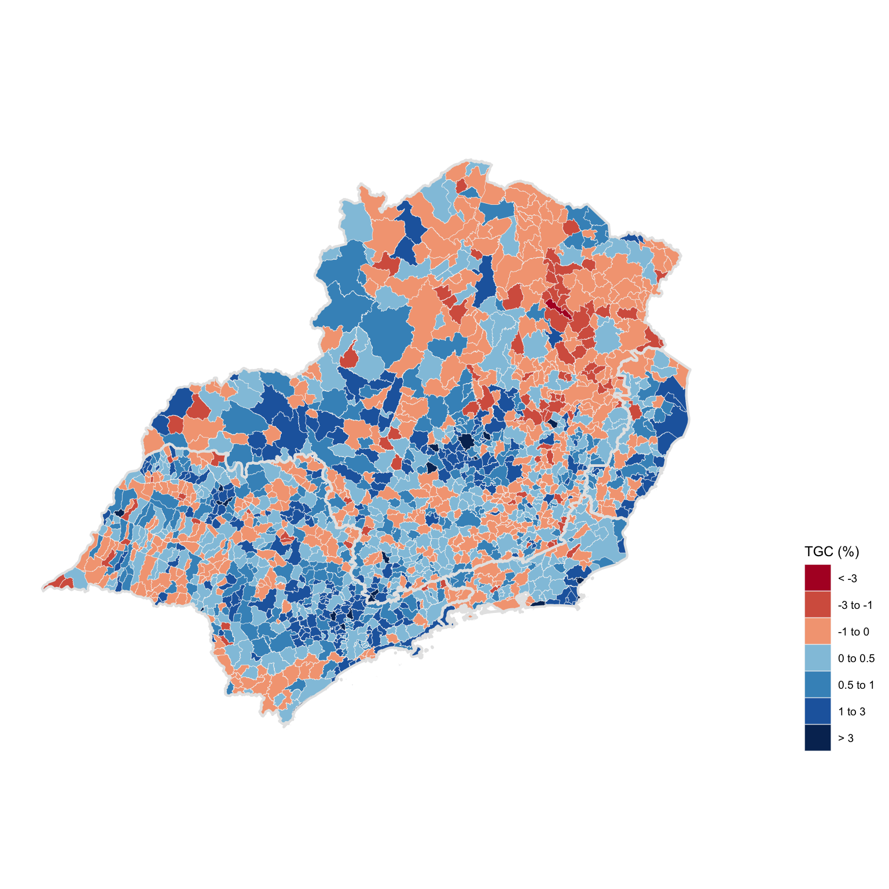
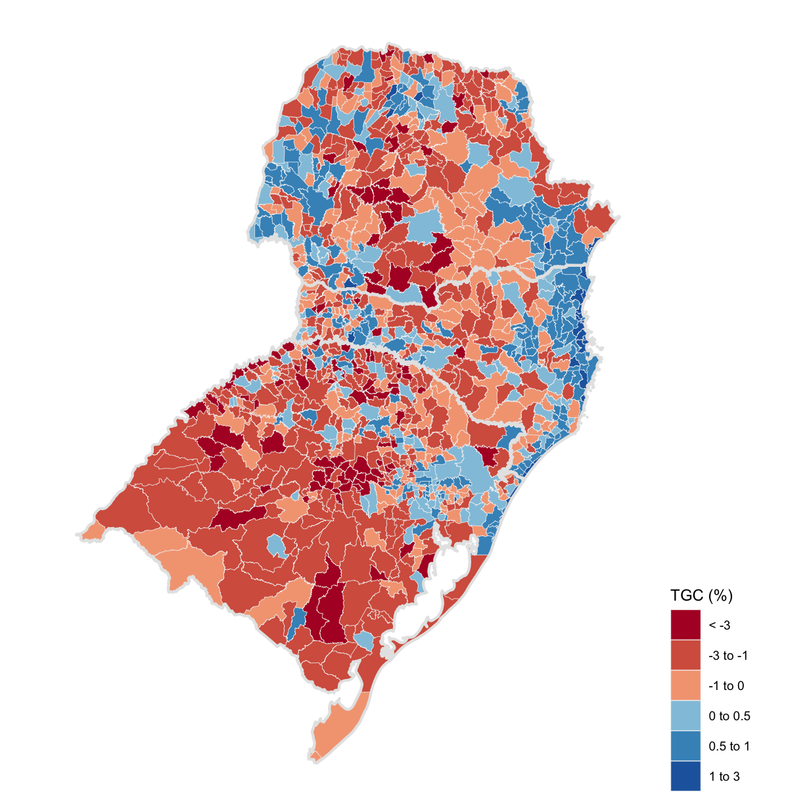
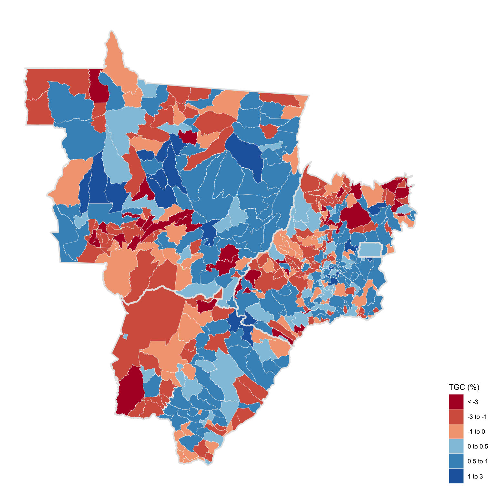

Weekly Visualization
Brazilian Census in Maps
North
Both the north and northeastern cities benefit from relatively younger demographics. Adult population is still - by far - the largest demographic group and fertility rates are usually above the national average. These cities usually have the lowest share of above 65 years population. Some regions, and the state of Roraíma in particular, have also benefited from immigration from neighbor Venezuela.
Northeast
Despite favorable demographics, northeastern cities are aging rapidly and shrinking in size. Alagoas and Bahia registered some of the lowest growth rates at 0.02% and 0.07% respectively. The region, as a whole, struggles with safety issues, high unemployment, and stagnant income growth.
Southeast
The southeast region concentrates the largest share of GDP and population in Brazil. Demographic indicators show a large elder population and very low fertility rates. Growth in São Paulo and Espírito Santo has been close to the national average while Rio de Janeiro and Minas Gerais lag behind. The latter state has the second lowest growth rate, 0.03%. As shown in the previous Brazil in Charts post, Rio de Janeiro has the highest unemployment rate among the southeastern states.

South
The southern region cities registered significant population losses. The southernmost state, Rio Grande do Sul, had a growth rate of only 0.14%. Economic stagnation, fertility rate decreases, and the rise of safety problems have also increased emigrations flows. Santa Catarina had the second highest growth of all states, 1.66%, falling only behind Roraíma, which received a huge influx of Venezuelan migrants. Santa Catarina boasts low unemployment, high income, and solid economic growth. The northeastern cities and the Chapecó metropolitan region, in particular, had some of the highest growth rates among large cities (over 100 thousand inhabitants).

Midwest
The midwest cities exhibited significant population growth. Agriculture is still the most productive Brazilian sector and the Midwest accounts for the majority of the countries agricultural output. High income per capita and job opportunities make these cities attractive destinations for migrants.
The map can be deceptive, since some of the bigger municipalities actually have medium or small populations.

What is the Geometric Growth Rate?
The geometric growth rate expresses the change in a population, assuming that it increases or decreases at a fixed rate.
Lets assume that population at a given time, \(P_{t}\), increases at a fixed rate \(R\). Then, the relative population change/growth \(\frac{\Delta P_{t}}{P_{t}}\) is given by
\[ \frac{\Delta P_{t}}{P_{t}} = \frac{P_{t+1} - P_{t}}{P_{t}} = R \]
Rearranging terms,
\[ P_{t+1} = P_{t} + RP_{t} = (1 + R)P_{t} \]
which states that the population in a future period is simply the current population increased by \(RP_{t}\) where \(R\) is the geometric growth rate. Since this growth rate is constant, we can generalize that
\[ P_{t+n} = (1+R)P_{t+n-1} = (1+R)^2P_{t+n-2} = \dots = (1+R)^nP_{t} \]
This means that the population in any given time in the future is equal to the current population increased by the compounded geometric rate of growth. This is likely an unrealistic assumption for long periods of time but is a decent approximation in short periods. This last equation also provides the definition for the geometric growth rate:
\[ R = (\frac{P_{t+n}}{P_{t}})^\frac{1}{n} - 1 \]